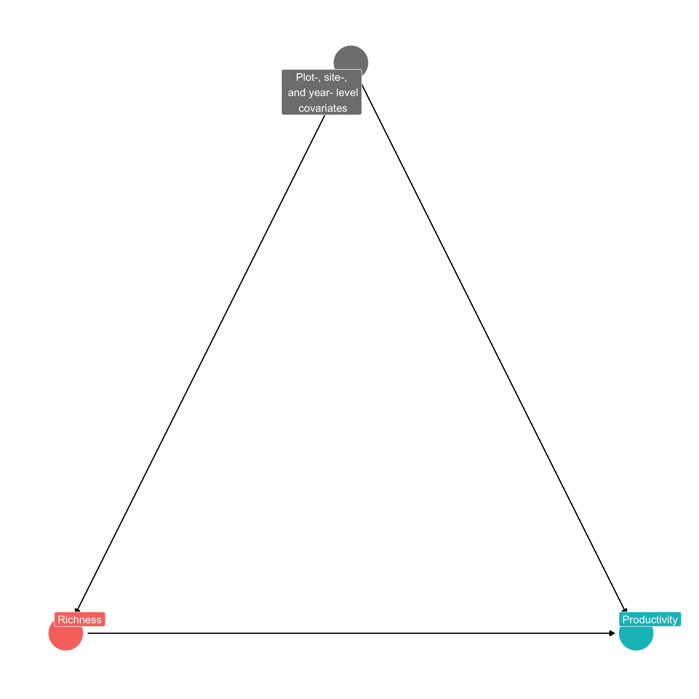

Tutorial on panel data and fixed effects designs
Description
This tutorial demonstrates how to use panel data and fixed effects designs using a real dataset from Dee et al. 2023 (https://doi.org/10.1038/s41467-023-37194-5). It is modified from the online tutorial for the main analyses run in Dee et al. (2023) Nature Communications, originally written by Laura Dee and Chris Severen with data from the Nutrient Network.
Set up
Load the packages used for data manipulation (tidyverse, data.table), making a directed acyclic graph (ggdag), and analysis (fixest, lme4).
The context
The Dee et al. 2023 study examines the effect of grassland species richness on productivity, engaging with ongoing debates about the relationship between biodiversity and ecosystem functioning. Specifically, it looks at how plant species richness (a continuous treatment) affects live aboveground biomass (outcome) in sample plots across different research sites over time.
Directed acyclic graph
Here’s a DAG for the research question:
The data
The data are in the file fixed_effects_data.csv.
The original data come from the Nutrient Network (https://nutnet.org/) or “NutNet.” Dee et al. (2023) cleaned and processed the data for their analyses: these data are available in the project release on Zenodo (https://zenodo.org/records/7675340). The data consist of control plots from 43 NutNet sites, with at least 5 years of data.
Variable names
The dataset contains a wide number of variables; we’ll mainly be using the variables live_mass (live aboveground biomass) and rich (plant species richness). Also important are the site_code, plot, and year variables, which we use to create fixed effects. site.by.yeardummy is a dummy variable for the interaction between the site and the year.
Naive correlations in single years
Let’s begin by looking at simple correlations that do not account for any confounding variables. We will examine both the overall correlation and correlations within a single year (i.e., using cross-sectional variation). We proceed with a linear regression framework, using the log of productivity (measured as live aboveground biomass) as the outcome and the log species richness as the explanatory variable.
We initially estimate and report \(\beta\) in: \[\begin{equation} \ln(\text{Live Mass}_{pst}) = \alpha + \beta \ln(\text{Richness}_{pst}) + e_{pst} (\#eq:eq1) \end{equation}\] where \(p\) indexes plots, \(s\) indexes sites, and \(t\) indexes years. The unobserved error term is \(e_{pst}\), and there is a constant \(\alpha\).
We can estimate results below using all years of data first, and then estimate the results using two individual years: 2012 and 2013. We will cluster standard errors by plot to reflect serial correlation in errors terms within a plot across years (we do not assume that errors are independent and identically distributed). Note that when we use only a single year of data, this is equivalent to using heteroskedasticity-robust errors.
| SimpleCorrAll | SimpleCorr2012 | SimpleCorr2013 | |
|---|---|---|---|
| Data All Years | Data in 2012 | Data in 2013 | |
| Dependent Var.: | log(live_mass) | log(live_mass) | log(live_mass) |
| Constant | 5.288*** (0.2398) | 4.915*** (0.4111) | 6.421*** (0.2294) |
| log(rich) | 0.0699 (0.0952) | 0.1849 (0.1706) | -0.3766*** (0.1006) |
| _______________ | _________________ | _________________ | ___________________ |
| S.E.: Clustered | by: newplotid | by: newplotid | by: newplotid |
| Observations | 1,231 | 145 | 121 |
| R2 | 0.00152 | 0.00928 | 0.08045 |
| Adj. R2 | 0.00071 | 0.00235 | 0.07272 |
Using all years of data gives a non-significant positive relationship between productivity and richness. In just the 2012 data, the coefficient is larger in magnitude, but still not significant. Finally, just using 2013 data, the coefficient switches signs and becomes significant.
So…which one should we believe? Well, probably none of these, because they likely do not identify the true causal effect of richness on productivity without statistical bias. Their variability highlights that these estimates, which rely on non-experimental cross-sectional data, are likely contaminated by omitted variable bias.
When does \(\hat{\beta}\) capture a causal relationship? When there are no unobservables that are correlated with richness that also influence productivity: \(\mathbb{E}[e_{pst} \times \ln(\text{Richness}_{pst})]=0\) (i.e., \(e_{pst}\) and \(\ln(\text{Richness}_{pst})\) aren’t correlated). In the above results, there’s probably stuff in \(e\) that is correlated with richness, like precipitation, disturbance, land-use history, soil characteristics, and other characteristics of sites and plots.
Multivariate Regression that adjusts for confounding variables
Of course, in the above correlations, we include plots in sites from across the world, implicitly comparing grasslands in warmer climates with those in cooler ones, or wetter with dryer, or Europe with the Americas. There are a lot of differences between these places! A common response to this problem is to try to measure these differences and include them in the model.
More generally, a common statistical design in ecology is to measure and control for confounding variables in multivariate regression. In the causal inference literature, this is known as conditioning on observables or Pearl’s back-door criteria. Conditioning on observables is convenient but makes strong assumptions for causal inference, namely the “Selection on Observables” Assumption. Informally, this assumption implies that confounding variables that could introduce bias into a design are known and observable to the researcher. The bias they introduce into an estimator can be eliminated (controlled, blocked) by conditioning strategies, such as regression, matching, or stratification methods.
To explore the consequences of adding in covariates, let’s run models that add different subsets of the potential confounders. We’ll create a table with model results for 5 different models. The first model is the simple model we generated in the previous code chunk. The second column adds in soil chemistry covariates, the third column instead adds weather covariates, and the fourth instead adds management variables plus habitat. The last columns adds in everything. For the purposes of this tutorial, we only show coefficient estimates for richness in the following table, even though the other terms are included in the model.
| SimpleCorrAll | SoilCovars | WeatherCovars | MgmtCovars | AllCovars | |
|---|---|---|---|---|---|
| Data All Years | + Soil | + Weather | + Management | + All | |
| Dependent Var.: | log(live_mass) | log(live_mass) | log(live_mass) | log(live_mass) | log(live_mass) |
| log(rich) | 0.0699 (0.0952) | 0.2251* (0.1127) | 0.0203 (0.0907) | 0.0275 (0.0822) | 0.4190* (0.1649) |
| _______________ | _______________ | ________________ | _______________ | _______________ | ________________ |
| S.E.: Clustered | by: newplotid | by: newplotid | by: newplotid | by: newplotid | by: newplotid |
| Observations | 1,231 | 675 | 1,231 | 1,231 | 675 |
| R2 | 0.00152 | 0.33781 | 0.20626 | 0.37496 | 0.51377 |
| Adj. R2 | 0.00071 | 0.32068 | 0.20041 | 0.36568 | 0.48309 |
Estimates jump around depending on which covariates are used! This is likely a sign of some sort of omitted variables bias. Even though we consecutively explain more and more of the variation in the data, we are not necessarily any closer to a causal relationship.
Fixed effects: changing the source of variation
We now move on to the focus of this tutorial: let’s switch up where the identification comes from.
Plot fixed effects
Let’s ignore sites for a minute, and just think about the plots that lie in a single site. We’re going to estimate the following model: \[\begin{equation} \ln(\text{Live Mass}_{pt}) = \beta \ln(\text{Richness}_{pt}) + \delta_p + \mu_t + e_{pt} \end{equation}\] where we’ve added the term \(\delta_p\). This represents a vector of plot-specific fixed effect – a dummy variable for each plot. We also add time fixed effects (\(\mu_t\), a dummy for each year) to control for the common differences to all plots in a year (in a site). We’ll touch on that more later, but really, the plot fixed effects are of greatest consequence.
What does adding this vector of plot dummy variables do? Two big things. First, it controls for any and all time-invariant features of the plot, whether or not we observe them! To see this, imagine putting in a variable \(x_p\) into the above equation linearly with the coefficient \(\gamma\). We wouldn’t actually be able to estimate \(\gamma x_p\); it’s already a component of \(\delta_p\). Don’t know what functional for you should use for \(x_p\) or whether it should be interacted with another variable? That’s fine, that’s already included in \(\delta_p\)! We get a whole lot for the inclusion of this variable. In DAG form, we have now removed observable and unobservable plot-level confounding effects.
Second, and most importantly conceptually, is that we are no longer directly comparing different plots; we aren’t using cross-sectional variation any more. Instead, we are using variation in richness and productivity within the same plot over time. So, we’re implicitly comparing a plot in year \(t\) with this same plot in year \(t+k\) for some \(k\). Another way to see this is that we could write a very similar equation in differences (ignore the \(\mu_t\) for a moment): \[\begin{equation} \left(\ln(\text{Live Mass}_{pt})-\ln(\text{Live Mass}_{pt-1}) \right)= \beta \left( \ln(\text{Richness}_{pt}) - \ln(\text{Richness}_{pt-1}) \right) + \left( e_{pt} - e_{pt-1}\right) \end{equation}\] Where did \(\lambda_p\) go? Well, \(\lambda_p-\lambda_p=0\), so we don’t need it. (NB: We could also subtract the mean of each variable over time within each plot and arrive at a similar estimator. There are subtle differences between the two approaches that depend on the nature of the error terms \(e\), but they draw on the same source of variation).
What do we have to assume for a causal interpretation? There are a couple of different assumptions we could choose; I think it’s easiest to frame it like this: \(\mathbb{E}[ (e_{pt} - e_{pt-1}) \times (\ln(\text{Richness}_{pt}) - \ln(\text{Richness}_{pt-1}))]=0\). That is, changes in richness are uncorrelated with changes in unobserved determinants of richness. Because time-invariant unobservable variables do not change, they are no longer a concern! Instead, we’re concerned if movements in some unobserved factor could both be driving our outcome variable and be correlated with richness.
The figures below illustrate graphically what the plot fixed effects do to the outcome variable (productivity). First, we plot he raw data, and showing log(live mass) in four plots split between two sites (at the Sedgwick Reserve and at the Sevilleta Long Term Ecological Research sites). Sedgwick has higher productivity on average. The productivity at these sites also appears to be following different trajectories through time (e.g., note the dip in productivity at Sevilleta in 2009).
Data prep
Next, we inclue fixed effects. The resulting plot shows that we have now removed the average productivity in each site. The fixed effects do not remove site-and-year specific sources of confounding variation (e.g., if a more extreme drought happened at Sevilleta than at Sedgwick in 2009 affecting both productivity and richness); we turn to eliminating site and year specific confounding variables next.
To the statistical model: We’re first going to estimate the following equation site-by-site on the five sites with the largest number of observations (in terms of the number plot-years we observe; see Table S1). \[\begin{equation} \ln(\text{Live Mass}_{pt}) = \beta \ln(\text{Richness}_{pt}) + \delta_p + \mu_t + e_{pt} \end{equation}\] The year fixed effects \(\mu_t\) control for time-varying factors (observed or unobserved) that affect all plots at the site under consideration. For example, suppose 2007 was a particularly damp and rainy year at the site; \(\mu_t\) controls for the average impact of that across all plots. Because what happens at one site in a year is probably very different from what happens at a different site in the same year, we estimate these separately for each site. This will make the point estimates for each site less precise (especially because we’re clustering by plot), but this is just for illustration’s sake.
| SimpleCorrAll | PlotFE_1 | PlotFE_2 | PlotFE_3 | PlotFE_4 | PlotFE_5 | |
|---|---|---|---|---|---|---|
| Data All Years | US - CDCR | US - CDPT | CA - Koffler | US - SEDG | US - SIER | |
| Dependent Var.: | log(live_mass) | log(live_mass) | log(live_mass) | log(live_mass) | log(live_mass) | log(live_mass) |
| log(rich) | 0.0699 (0.0952) | -0.0972 (0.2189) | -0.6247. (0.2475) | 0.0257 (0.2501) | -0.0569 (0.1133) | -0.2651 (0.2472) |
| Fixed-Effects: | ————— | —————- | —————– | ————— | —————- | —————- |
| newplotid | No | Yes | Yes | Yes | Yes | Yes |
| year | No | Yes | Yes | Yes | Yes | Yes |
| _______________ | _______________ | ________________ | _________________ | _______________ | ________________ | ________________ |
| S.E.: Clustered | by: newplotid | by: newplotid | by: newplotid | by: newplotid | by: newplotid | by: newplotid |
| Observations | 1,231 | 55 | 60 | 72 | 66 | 53 |
| R2 | 0.00152 | 0.74115 | 0.72916 | 0.26473 | 0.73402 | 0.62055 |
| Within R2 | – | 0.00325 | 0.05917 | 0.00011 | 0.00444 | 0.04260 |
We again show the bivariate correlation on all sites first (SimpleCorrAll), and then the estimate for each site. Now we’re getting some negative coefficients (though mostly insignificant due to smaller effective sample sizes). We’re controlling for lots and lots of things that we couldn’t control for before, either because we didn’t think to include them or we couldn’t collect data on them. The R-squared values confirm that this is the case; we’re generally explaining much more of the data than before (but note: R-squared values are NOT important for causal interpretations generally). Note that, with the plot fixed effects, we do not have much statistical power estimating sites individually.
Takeaway: Using unit fixed effects in panel data shifts the identifying variation from across units to within units over time.
Bringing it all together with site-by-year fixed effects
We now combine all sites together to give us more statistical power to detect effects. We do want to account for the fact that different sites experience different conditions in different years. To do so in a flexible way, we include site-by-year fixed effects, \(\mu_{st}\). \[\begin{equation} \ln(\text{Live Mass}_{pst}) = \beta \ln(\text{Richness}_{pst}) + \delta_p + \delta_{st} + e_{pst} \end{equation}\] These additional fixed effects control for all time-varying effects that impact the site as whole (i.e., that apply to all the plots equally). Thus, they capture the first order effects of weather, among other factors that could shift outcomes for the site as whole. This gives us sufficient power to conduct conservative inference on our estimated average treatment effect.
To get a sense for what these site-by-year effects do, first recall Figure 2. Plots that are in the same site seem to have similar movements in productivity over time, even after controlling for plot fixed effects. The site-by-year fixed effects remove the average of everything that happens across the site in the data in a year (e.g., a drought at a site). Figure 4 removes this variation; see how the big drop in Sevilleta live mass in 2009 is much less in Figure 4.
To provide confidence that the results are robust, we will also include a couple of time-varying controls, evenness and lagged richness. NB: To make sure we don’t drop locations with values of zero evenness, we use the inverse hyperbolic sine instead of the natural log. Note that we don’t need to worry about that for productivity or richness because they never take a zero value.
| MainMod_Rich | MainMod_RichEven | MainMod_RichLag | MainMod_RichEve.. | |
|---|---|---|---|---|
| Dependent Var.: | log(live_mass) | log(live_mass) | log(live_mass) | log(live_mass) |
| log(rich) | -0.2418** (0.0854) | -0.2237** (0.0851) | -0.2185* (0.0939) | -0.2057* (0.0948) |
| ihs(even) | -0.1864 (0.2122) | -0.1450 (0.2387) | ||
| log(laggedrich) | -0.0146 (0.0905) | -0.0096 (0.0903) | ||
| Fixed-Effects: | —————— | —————— | —————– | —————– |
| newplotid | Yes | Yes | Yes | Yes |
| site.by.yeardummy | Yes | Yes | Yes | Yes |
| _________________ | __________________ | __________________ | _________________ | _________________ |
| S.E.: Clustered | by: newplotid | by: newplotid | by: newplotid | by: newplotid |
| Observations | 1,231 | 1,231 | 1,093 | 1,093 |
| R2 | 0.86669 | 0.86689 | 0.87092 | 0.87103 |
| Within R2 | 0.01281 | 0.01425 | 0.01064 | 0.01148 |
As you can see, estimate on log richness are relatively stable across different specifications. Of special note: the coefficient on lagged richness (richness from the year before) is small and insignificant, given us confidence that our results reflect contemporaneous movement in richness, and not some factor that is also correlated with last year’s richness.
Graphical depictions of fixed effects
Using simple plots of the relationships between richness and productivity (as log of richness and log of live mass), we can see the relationships shift from positive to negative as we add in fixed effects.
Figure 5 just shows the raw bivariate correlation, and is somewhat positive. Notice the range of variation across productivity and richness.
Figure 6 shows the relationship conditional on plot fixed effects. Note that this collapses the range of variation substantially. Recall that the plot fixed effects remove factors that are time-invariant and plot-specific. However, this graph still reflects the variation in sites across years.
Figure 7 continues to control for plot fixed effects, but also removes site-by-year variation via site-by-year fixed effects. This shifts the variation negative as factors that are common to sites within years no longer confound the relationship.